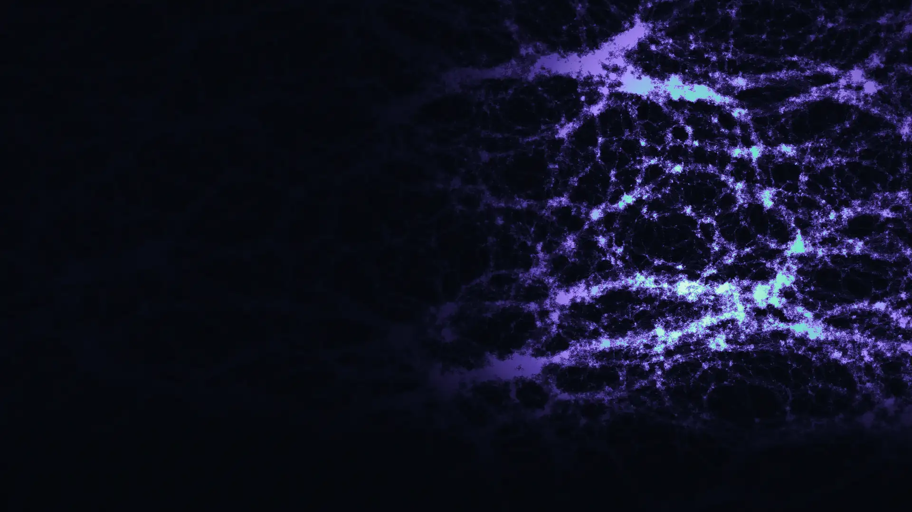

问 03
时空为什么是四维？
把基态还能动的方向数一数：8 − 4 = 4。另有两条彼此独立的约束落在同一个答案上。
闭合条件性开放接口 E7读这一条

公开评阅版
十一条主张，全部从同一个只有四个点的有限量子对象上读出，零个拟合的连续参数。每一条都带着它的证据等级，和它仍然开放的接口。
SHA-256 727d7c1f… · DOI 10.5281/zenodo.18892076没有人知道，宇宙为什么偏偏用这些数。
问 03
把基态还能动的方向数一数：8 − 4 = 4。另有两条彼此独立的约束落在同一个答案上。
闭合条件性开放接口 E7读这一条
问 05
一个实的哈密顿量，任何地方都没有 i。让粒子绕这条四格点的闭合回路走一圈——它带着 i 回来。
闭合条件性粘合步骤仍开放读这一条
须一并读四个角和四个维度是两个不同的四：一个由 i 的阶给出，一个由陪集维数给出。框架把它们锁在同一个载体上，从不声称其中一个就是另一个。
这样的数一共大约二十个。它们定下了一个原子有多大，也定下了宇宙散开得有多快。物理学把每一个都量出来——电子的质量、光抓住电荷的力气、天上有多少暗物质——再用手写进方程，然后接着往下算。
一个没有旋钮可拧的计算，错了就是错了，回不了头。
这是一幅关于想法的图，不是一幅天空的照片。它由固定随机种子在作者本机上生成，用的是泽尔多维奇玩具模型——教科书里那个能长出纤维、节点和空洞的一阶近似。图里没有任何望远镜数据，没有任何东西被拟合，也没有本框架的任何量参与其中。从物理学能叫出名字的最小长度，到我们能看见的最远处，大约相差 61 个数量级；这个框架唯一一条宇宙学对照就落在这跨度的远端，而它是本页最差的一行。
所谓大约二十个：最简标准模型是 19 个；把中微子质量算进来是 26 到 28 个，取决于中微子是狄拉克型还是马约拉纳型。宇宙学还要另外加一批。上面那条「没有旋钮」自己声明了适用类别——图上的 SU(m) 基本表示格点、两体相互作用。这个类别究竟是诚实地窄，还是被悄悄选得刚好合用，是作者自己挂出的公开审查靶点 A。
下面每一条，都是从同一个有限对象上读出来的——四个点、三种颜色、六条连线；隔一节会把这个对象整个摊开。排序依据是站得有多稳，而不是听上去有多惊人：前四条是关于这个有限对象本身的陈述，你不必先认可这个框架就能去查；越往下，条件性越强。这里没有任何一条是拟合出来的。
「本专著中的『闭合』一词是在带类型的意义上使用的。它并不意味着每一个对照数据都被提升为新的公理，也不意味着每一个依赖分支的诊断量都是高斯中心值预言。它的意思是：在所声明的载体之内，基底数据、几何证书与被允许的读出函子，都在任何实验室或宇宙学对照做出之前就已经固定下来。」
见「首读闭合证书」一节，引论章。
这个对象有四个角，是因为 i 的阶是四。元胞给出的那个虚数单位必须是真正的复结构——它的平方必须真的等于 −1——而这个单位就是元胞的时钟，即 2π/n 的转动。四分之一圈的平方等于 −1；三分之一圈不行。所以 n = 4。同一套自洽条件接着逼出三种颜色；遍历所有可能的（颜色数, 格点数），只有 (3, 4) 活了下来。
依赖于没有开放接口。它带的是一个适用范围，不是一条接口：图上由 SU(m) 基本表示构成的格点、两体相互作用，再加上框架仅剩的那一条设定——这样的元胞存在。作者自己把它挂为审查靶点 A。
定理 4.33 第 (i) 款，元胞自举一节。机器一侧：四分之一圈的时钟平方等于 −I，而三阶时钟可证不行；配套模块排除了所有 n ≥ 5。零 sorry，零项目公理。
把这个元胞精确对角化，它的 81 个态毫无自由度地裂成 15 + 45 + 12 + 9。其中 9 维的基态块是 3 × 3，而这两个「3」的来源截然不同：一个是 SU(3) 色的 3，另一个是置换四面体四个角那个群的 3 维 Specht 模。后一个 3，就是本框架对拉比问了九十年的那句话——「谁点的这道菜？」——给出的答案：没有谁点；三，不过是给四面体的四个角贴标签时相互独立的方式的数目。这个计数是闭合的数学，由杨图算术直接给出，不是拟合出来的。不闭合的是最后一步：把这个三维槽位真正落实成时空上三代费米子。
依赖于勘误 E8——世代扩张、完整正规嵌入、实物理分支保持、48 行流符号满射，全都仍是具名接口。作者自己的审计说得很直白：单靠 Schur 重数并不能证明时空源提升。同时受 E10 约束。靶点 8 与 10。
定理 4.3「由 Schur–Weyl 对偶给出的味世代」，及注 4.4「色与味：不作范畴混同」；数值证书实验 071。
时空是四维的，因为元胞的基态把 SU(3) 破缺到 U(2)，而剩下的那些方向——态还能动的方向——恰好是 8 − 4 = 4 个。第二条独立的论证从下方顶住：本框架把 CP 破坏表示成一个 (2,2) 形式，而 (2,2) 形式在低于四维时恒为零，所以一个存在 CP 破坏的宇宙不可能更低维。另有两条约束落在同一个答案上；专著称之为一把「四重锁」，而不是一条定理。四个角与四个维度，是两个不同的「四」，由两条不同的论证得到——角来自 i 的阶，维度来自陪集的维数计算。框架把它们锁在同一个载体上；但从未声称二者是同一回事。
依赖于SU(3) 的选出，这一步是内部的、闭合的。在模时钟给出时间之前，那四个维度是欧氏的；欧氏到洛伦兹的转移要经过勘误 E7 明确列为独立的商映射、模-Wick 映射与微分同胚-Ward 映射。靶点 2 与 3。
K4 元胞一章「四维时空作为拓扑必然」一节——拓扑必然性定理与 Berry 形式的 CP 阻碍定理，两条都是闭合的，另加「D = 4 的四重选出」一则注记。
不只是那个「四」。在所声明的类别之内，每一项结构特征都由自洽性逼出，且没有任何实验数值进入其中任何一条：四个格点、三种颜色、置换型的相互作用形式、完全图、一个均匀耦合，以及反铁磁符号——最后这一条还由两条独立路线重复确定。框架对基底仍然设定的，只是「存在这样的元胞」。它们的结构是定理。
依赖于没有开放接口；只有第 01 行那条类别边界与存在性条款。E10 对该定理收尾那句读出闭合语作了封顶。靶点 A。
定理 4.33 与注 4.34。五个 Lean 模块，零 sorry，公理不超出三条标准逻辑公理；图的那一款在全部 64 个带标号图上被穷举机器核验。
引擎是实的。从一个实的基底、一个实对称的哈密顿量出发——任何地方都没有 i——让一个粒子绕元胞那条四格点的闭合回路走一圈。回路的四阶对称性会交给它一个无法用规范变换消去的相位，而那个相位就是 i。用作者自己的话说：复数量子力学，是闭合一个二维回路所付的几何代价。那些排除了实数量子力学的实验，在这里是对这幅图像的外部检验，而不是它的原料。
依赖于该定理自身条件性的那一半——把局域的 ±J 平面提升为单一整体复标量的合成粘合。表示的那一半是闭合的。
实真空一章「K4 上 i 的涌现：三种成分」及其表示引理；回路闭合那一段；实验 074，虚数单位的 Z₄ 定位。
图 5虚数单位从哪里来
从一个实的基底、一个实对称的哈密顿量出发——任何地方都没有 i。
i1 = i
虚i2 = −1
实 · 走到一半：恰好是 −1i3 = −i
虚i4 = +1
实 · 回到 +1：回路闭合虚线是元胞另外两条边，不在这条回路上。粒子每走一步，累积相位就乘一次 i。
这个单位必须是真正的复结构——它的平方必须真的等于 −1。
(2π/4)² = 180° = −1
四分之一圈：平方恰好落在 −1 上(2π/3)² = 240° ≠ −1
三分之一圈：差 60°，落不到 −1四分之一圈的平方等于 −1；三分之一圈不行。所以 n = 4。机器一侧：配套模块排除了所有 n ≥ 5。
引擎是实的。让一个粒子绕元胞那条四格点的闭合回路走一圈，回路的四阶对称性会交给它一个无法用规范变换消去的相位，而那个相位就是 i。用作者自己的话说：复数量子力学，是闭合一个二维回路所付的几何代价。而这个单位就是元胞的时钟，即 2π/n 的转动——四分之一圈的平方等于 −1；三分之一圈不行。所以 n = 4，这也是这个对象为什么有四个角。
闭合 · 表示的那一半条件性 · 合成粘合
依赖于该定理自身条件性的那一半——把局域的 ±J 平面提升为单一整体复标量的合成粘合。表示的那一半是闭合的。
作图依据图中的回路是元胞自身 6 条边里的 4 条，虚线是余下的两条；两个时钟的平方在构建时重新计算——从 n = 2 到 n = 12，只有 n = 4 的平方落在 −1 上，构建脚本会为此停下来。
去查实真空一章「K4 上 i 的涌现：三种成分」及其表示引理；回路闭合那一段；实验 074，虚数单位的 Z₄ 定位。
标准模型的超荷是一串古怪的小清单——1/6、2/3、−1/3、−1/2、−1、0、1/2——没有人知道为什么。在这里，基底的七个匿名行（只按它们所处的位置和所带的东西标记，不贴任何粒子名）被反常相消，连同一个整数提升 δ = −5（由三条独立方程重复确定），逼到整数组 (1, 4, −2, −3, −6, 0, 3)。把标准模型的七个超荷乘以六，得到的正是这串数，顺序一致。那些名字——夸克双重态、上、下、轻子双重态、电子、右手中微子、希格斯——是最后才贴上去的；推导中没有任何一个方程用到它们。
多元胞一章「带类型标准模型积的匿名载体唯一性」，以及逼出 δ = −5 的手征反常敷层定理。
图 3 · 把标准模型的七个超荷乘以六，得到的正是基底七个匿名行被逼到的那串整数，顺序一致。整数由反常相消，连同一个整数提升 δ = −5（由三条独立方程重复确定）逼出。灰色那一栏的名字是最后才贴上去的；推导中没有任何一个方程用到它们，所以它与前两栏断开排列。
强相互作用本来是允许破坏 CP 的，但它没有：实验把这个角压到 10⁻¹⁰ 以下，而标准的补救办法是发明一种新粒子——轴子——它唯一的职责就是把这个角弛豫到零。在这里，是四面体自身的对称性完成了这件事。给四个角重新编号会反转元胞的取向，从而把拓扑荷的符号翻过来，于是这个真空角根本不可能连续可调——只剩 θ = 0 与 θ = π 两支——而框架的实真空落在 0 上。不需要轴子。IAXO 或 ALPHA 若找到 QCD 轴子，世界就落在这个分支之外。
依赖于实真空分支的选出；物理角在辐射修正与夸克质量下的稳定性另挂一条闭合。在对照一侧这是一条「界」行——低于现有所有上限只表示尚未被检验，不表示已被证实。
K4 元胞一章「θ_QCD 的拓扑禁戒」，配 QGT 厄米性强 CP 定理；预言一章的分支选择检验 1。
在这个对象的量子态空间上，有一个张量，它有实部也有虚部。实部度量两个态有多可分辨，成为度规几何；虚部度量和乐，成为规范曲率。两者出自同一个对象——这一步是闭合的，其精确陈述是一条勾股恒等式，是一条定理。至于它们的动力学因此一并到来——爱因斯坦方程与杨-米尔斯出自同一个源头，而不是并排粘在一起——这是本框架的核心赌注。它被写成一个条件性的方程组，条件逐条具名；作者从中拆分出去投稿的那篇论文，标题就叫《条件性爱因斯坦-杨-米尔斯场方程》。
涌现几何一章的射影全息等距／切空间勾股定理；Grassmann 一章的响应筛选 Einstein–Yang–Mills 基底方程；以及在审的第二篇论文 CQG-116665。
标准的暴胀需要为此专门发明一个场，它的势能形状先用手挑出来，再去调参。这里，暴胀是基底本来就有的一个阶段：元胞拥有的六条离散曲率轨道中，有一条曲率为正——一座德西特岛——在模时间里穿过它，就是暴胀期。它自行结束：曲率剖面越过一条临界线，进入下一条轨道。没有暴胀子，没有要调的势，也不需要另加再加热场。它读出的哈勃标度约为 1.7 × 10¹⁵ GeV。
依赖于被选出的德西特岛分支，以及第 11 行中定下 Λ_K4 的同一条标度线分支。e-folds 计数被明确标为带再加热效率修正的条件性读出。
宇宙学一章与 Read_cosmo 附录：「K4 基底含有一座德西特紫外岛」，及「K4 德西特岛穿越即宇宙学暴胀分支」。
元胞那个四阶的时钟能分辨 +i 与 −i。框架把这一个区分沿着一条四箭头的链条一路往外推：推到中微子混合的相位，推到轻子生成的不对称，推到物质多于反物质，最后推到时间流动的方向。每一支箭头都是一次条件性读出，而这条链条的终点是一次测量，不是一句漂亮话——框架要求 sin δ_CP 为负，因此 DUNE 或 Hyper-K 若测到正值，它就结束了。取向本身是故意不推导的：它是自发选定的真空数据，而这恰恰使这把符号锁成为一次检验，而不是一次拟合。
依赖于每一环都是不同重整化深度上的一次选出或条件性读出。靶点 C。
i 涌现定理；紫外／红外 δ_CP 定理；由 PMNS Berry 相位给出轻子生成的定理；宇宙学一章的时间之箭推论。
在本框架中，标准模型那约十九个实测常数并非十九个彼此独立的事实。基底的代数通道以零连续拟合代价给出其中的无量纲量，只余下单一能标；随后 K4 反常统一定理把这最后一个连续标度锁定到一个整数上——ν₃ = +1，也就是四面体的四个角对 3 取模。这一锁定步骤在其 mod-3 算术与经机器核验的配边识别上是闭合的，残留仅归结为两条关于「基底允许源出什么」的具名假设。它成立于一个被选定的分支之上；普朗克质量仍作为计量单位保留，而不是被导出；而把基底的手征内容等同于完整的标准模型载体，目前仍由若干具名的开放接口承担。专著自己援引的类比是 Green–Schwarz 机制：一个反常条件锁定整个理论的结构。
依赖于Spin／no-Pin 物质源类型条款；SymTFT 积结构条款；对称质量生成解耦分支；b₀ 约定分岔；把 Λ_K4 定在 3 × 10¹⁵ GeV 附近的蜂窝选择；作为单位保留的普朗克质量；以及载体一侧的 E8。靶点 D 与 8。
宇宙学一章定理 7.6（K4 反常统一）与定理 7.7（K4 解耦）；反常统一附录中的配边支架定理。第一支箭头「十九到一」是一条账本陈述，不是定理；只有第二支箭头有定理支撑。
知之為知之，不知為不知，是知也。
《論語·為政》——作者亲手放在「预言与检验」一章卷首的题词
本框架有三个层次，并且明说了：微观层，即元胞那个 81 维的有限希尔伯特空间；参数流形，其上带有 Fisher 度规与 Berry 联络；以及涌现时空，即长波极限下的 Fisher 流形，而其中的洛伦兹时间由一个模构造给出，而不是被假定。专著确实通篇使用「边界」与「体」这两个词——但这里的「边界」指的是原始的希尔伯特空间及其态流形，「体」指的是变分参数流形。它们不是两个时空，也没有哪一个是二维曲面。
「全息」一词由作者本人在使用它的那条定理处收窄：它指的是从一个边界位移到体的 Fisher 切像的忠实切空间读出。其精确陈述是一条勾股恒等式——边界距离等于体距离加上一个表示误差，当该误差为零时两者重合。这条恒等式是闭合的。体的局域性、重构包络以及全部动力学，都经由另外的结果进入，不能仅凭这条投影恒等式得出。
共形不变性、全息对偶与 AdS/CFT 都不是这条路线的前提；本框架是刻意走到它们之外的。而在它确实伸手去取一部真正的全息词典之处——把径向方向读作 Swingle–Vidal 意义下的纠缠深度——那部词典被标为条件性；至于模深度坐标能否经受住与已知张量网络径向重构的对照，则是作者自己挂出的公开审查靶点之一。
Cabibbo 参数——夸克世代之间混合得有多厉害——在这个框架里读出来不是一个小数，而是一个精确分数：9/40。自己除一下：9 ÷ 40 = 0.225，一位不多一位不少，再往后除还是 0.225。实测值是 0.22501 ± 0.00068。你刚刚亲手核对了这份账本里的一行。
实测值及其误差棒0.22501 ± 0.00068
0.225 落在误差棒之内
下面每一个数，都从同一个有限对象上读出来。它是这样的，分三步。
Was mich eigentlich interessiert, ist, ob Gott die Welt hätte anders machen können, das heißt, ob die Forderung der logischen Einfachheit überhaupt eine Freiheit lässt.
我真正感兴趣的是：上帝造这个世界时，是否还能造得不一样——也就是说，逻辑简单性的要求，究竟还留不留有任何自由。
阿尔伯特·爱因斯坦，据 Ernst G. Straus 转述——作者亲手放在第一章卷首的题词
四个点，每一对都连起来——四个点之间正好六条连线。每个点上放一个很小的量子自由度，有三种取法。每条连线都要求两端彼此不同。关键在下一步：三种取法分给四个点，这件事办不到，总有一对撞在一起。于是这个对象永远安定不下来，永远处在张力之中，而这张力本身是有结构的。
想四个人合唱一个和弦。你听到的东西不在任何一个人的嗓子里；一个孤零零的长音不是和弦。四个人一起升调，和弦不变，因为能听见的只有音程。这里一样，而且更彻底：任何单个点上的绝对取值根本没有意义。在这个对象内部，一切可算的量——每一个距离、每一个耦合——都由那六条关系承载，没有一样由那四个点承载。点只是关系必须附着的地方。
这个对象的量子态空间上，带着一个自然的几何量。它的实部是一个距离——Fisher 度量；虚部是一个曲率——Berry 曲率。把那个距离叫作度量腿，把那个曲率叫作规范腿。引力活在前者上；Yang–Mills 理论——另外三种力所依托的那类场论——活在后者上。两者出自同一个对象，这一点是已建立的。赌注是它之后的全部：赌引力和 Yang–Mills 因此一起出来，而不是事后拼上去。这一步还没走完——真正写下来的只是一组条件性的 Einstein–Yang–Mills 响应，而它的条件就是下面路线图里画成缺口的那些开放接口。
四个站点、六条边、每个站点三个局域态：在施加动力学和约束之前，共 3⁴ = 81 个基矢态。
81 小到可以整个印出来。下面是起始空间的每一个基矢态，画成四面体，一个站点一种颜色。粗线表示两端同色。
同色边数，对全部 81 个态取平均恰好是 2= 6 条边 × 1/3
81 个里有 0 个。四个点、三种颜色，必然有两个点同色；而 K4 每一对点之间都有边，那条边就一定存在。阻挫不是假设，是算术。
这些是施加动力学和约束之前的乘积基矢态。基态是一个纠缠叠加，不是这 81 格中的任何一个。这里没有推导出任何物理——它只是定下对象的大小，并说明阻挫是结构性的。
这十一行是目前已经有公开对象可以对照的行；其余的清单在手稿表格里。最差的一行是 BAO 绝对距离尺度：χ² = 34.40，13 个自由度，等效 3.28 σ。它和最好的那一行在同一张表、同一根刻度条上，只是低一道——因为 13 个自由度上的 χ² 与单行的 pull 是不同种类的数，不是因为要把它藏起来。
由开放接口承载
实验只分辨到第 2 位有效数字为止
物理迹臂门读出 条件依赖于 E6
由开放接口承载
实验只分辨到第 3 位有效数字为止
质量塔 / mechanism-F
由开放接口承载
实验只分辨到第 2 位有效数字为止
Casimir-flag 读出 条件依赖于 E8
由开放接口承载
实验只分辨到第 3 位有效数字为止
精确分数——位数永远不会终止
CKM 类型化读出 条件依赖于 E8
由开放接口承载
实验只分辨到第 8 位有效数字为止
带电轻子协议 条件依赖于 E8
由开放接口承载
实验只分辨到第 4 位有效数字为止
闭合的类型化电弱读出 条件依赖于 E3, E8
由开放接口承载
框架在这一行不承诺位数。这是一次标度线比较，而且在这一行，钝的那一边是预言。
Type-7 色标度线 条件依赖于 E5
这是形状与尺度诊断，不能和上面几行放在一起平均。
算出 30.135
实测 χ² = 34.40 / 13
绝对尺度诊断
算出 frozen K4 CPL curve
实测 shape-only comparison
仅形状诊断
以点值给出，落在现有的每一条上限之下。低于上限的意思是尚未被检验，不是已被证实。
算出 ≈ 0.059 eV
选定的正常序分支
算出 3.69 meV
Majorana 点值输出
这里没有一个总分，以后也不会有。三组里的数是不同种类的数，把它们平均是范畴错误。
完整清单是 31 项主预言、20 项配套与读出细化、一组稀有 B_s 协议行，以及 1 条结构性宇宙学廓线 κ₄(r)。 每一行的当前状态以手稿表格为准。
实测值及其不确定度转录自公开评阅仓库的对照表，本站没有独立溯源。真正值得核的正是这一步转录。
连续拟合参数：0 个。没有旋钮。参数就是旋钮，标准模型有大约二十五个，每一个都由实验拧到位；这里一个都没有。对象是死的：四个点、每点三个态、完全图、六条边上同一个均匀反铁磁耦合。连耦合的整体强度都会在无量纲比值里约掉——上面「可比的 pull」和诊断这两道里，每一行都是无量纲比。单边那一道的两行不是：Σ m_ν 和 m_ββ 以 eV 给出，必然带一个绝对质量尺度，这条「约掉了」的论证盖不住它们。要找隐藏输入，那两行是第一处该看的地方。
物理公设：一条——K4 单元格点的存在性，作为定义性数据。在其声明的类内，单元自身的形状（四点、三色、完全图、均匀反铁磁耦合、类和的整数归一化）是由内部自洽性推出来的，不是假设的。而那个「声明的类」到底有多宽，本身就是一个评阅目标。
如果你发现任何一行的左边偷偷进了一个实验测量值，那就是反证。指出是哪一行、在哪里。 提一个 issue
这是从有限对象走到比较面的整条路线，缺口按缺口画。实线表示精确或模型内部成立；断开的一跨是作者已经公开声明为开放的具名接口——缺口里的编号是他自己的勘误号。
图 6这是从有限对象走到比较面的整条路线，缺口按缺口画。实线表示精确或模型内部成立；断开的一跨是作者已经公开声明为开放的具名接口——缺口里的编号是他自己的勘误号。
5 个具名缺口共承载 6 行数值，E8 一条承载 4 行；缺口画多宽，就是有多少行从这里掉下去。缺口按缺口画，不按链节定位——作者的勘误没有按链节编号。
主开放桥 有限 K4 基底 → 忠实物理实现
电弱提升是一个具名接口，不是隐含的等同
承载：sin²θ_W(M_Z)
非阿贝尔色载体仍是一个独立构造
承载：α_s(M_Z)
几何响应标量 Λ_geo 不等于稳态物理标量 Λ_eff
承载：Λ_eff ℓ_*²
世代扩张、完整正规嵌入、实物理分支保持、48 行流符号满射
承载：sin²θ_W(M_Z) λ_C m_μ/m_e CKM J
相对提升与自然粘合 (DC-G)；底层类单射性 (DC-U)
不承载数值行——这一条承载的是类型目录与扇区主张
现在把它们同时全部抽掉。剩下的是一个关于有限图的定理——它是真的，也经过机器核验，但它不是关于自然界的陈述。这就是这个项目诚实的下限，也正是上面那些数被摆出来当靶子、而不是当结论的原因。
有旋钮的理论能在任何实验结果面前活下来：重新拟合就是了。这套理论没有旋钮，所以一旦对不上，只有两个动作可选：在推导里找出一处真正的错误并公开更正，或者承认框架完了。没有第三条路，因为没有旋钮可拧。
正常序是推出来的，倒序在模型内被范畴性排除。
倒序一旦被确认，框架就结束。
JUNO · DUNE · Hyper-K
sign(sin δ_CP) × sign(η_B) = −1。结合观测到的重子不对称，框架要求在标准物质约定下 sin δ_CP < 0。
一旦测到 sin δ_CP > 0，框架被证伪。
取向本身是刻意不推导的——它是自发选出的真空数据。正因如此，这个锁是一次检验，而不是一次拟合。
DUNE · Hyper-K
上卦限，4/7。
如果下卦限被确定下来，就与它矛盾。
DUNE · Hyper-K
m_ββ = 3.69 meV，以点值给出，不是一个区间。
目前低于所有上限——这意味着尚未被检验，不是已被证实。
下一代 0νββ
两项读出给出 Λ_eff ℓ_*² = 2.93×10⁻¹²²，观测值 2.89×10⁻¹²²（±1.5%）——条件依赖于 E6：冻结的 PDF 把几何响应标量 Λ_geo 与稳态物理标量 Λ_eff 混为一谈。
一次精度达到或优于 0.5% 的 Λ 测定，可以把两项读出与领头阶的值分开。
下一代宇宙学
sin²θ_W(M_Z) = 0.231219995——条件依赖于电弱提升接口与标准模型载体接口（E3、E8）。
如果实验收紧并且挪动，没有任何补救手段。
精密电弱
转录自冻结的公开评阅版：2026-08-29
更新于 2026-08-29
专著本身没有投过期刊，也未经同行评议。从中拆出的两篇论文正在审理：
专著本身不在 arXiv 上。
行未获核验，并且被明确标注为未核验。
lean_certified727proved_core_only19needs_lean_node4prose_empirical_open21Lean 4 是一个证明助手：把定理用一种计算机能核对的语言重写一遍，任何一步不成立，文件就编译不过。在 2026-07-08 发布时，逐行签核覆盖了手稿全部 771 条带标签的定理行：727 条 lean_certified，19 条 proved_core_only，4 条 needs_lean_node，21 条 prose_empirical_open。根语料是 313 个模块。每一条编译通过的陈述都只依赖数学库的三条标准逻辑公理——propext、Classical.choice、Quot.sound。项目自身不引入任何公理、任何 opaque 声明、任何 sorry。
「已核验」的意思是：Lean 里的陈述，在该陈述自己声明的粒度上，与文字陈述具有同等逻辑效力。这些证书里多数是载体封顶的——数学库尚未提供的某个分析成分（一个聚类界、一个连续极限输入）以一条明确命名的假设进入，而不是变成一个隐藏假设。核验断言的是逻辑结构，不是自然界。把一个错的陈述机器核验一遍，它仍然是那个错的陈述；这 727 行诚实的读法是账目干净，不是物理正确。
公开评阅 PDF，及其校验和：
sha256sum K4_Cell_Framework_v2.0-public-review.pdf
727d7c1fd690655a7a487afd66ba39b12f5b0eae5a622e2a224005a02d27c479这份 PDF 是 2026-07-08 刻意冻结的。后来对抗性审计确认的第 3 章更正发布在勘误里；字节从未被静默替换。政策就这一条，而且你可以自己核。
这一页上的每一个数，都是在构建时从同一份数据文件 ledger.json 写进这一页的。构建会把它能重算的部分重算一遍——每一个 pull、每一个可分辨位数、Lean 各桶的合计——并核对页面正文里确实印着这些值，一旦对不上就拒绝发布。但那份数据文件本身是人工从公开评阅仓库转录的，构建无法拿它去对手稿。所以真正值得核的正是这一步转录——文件就放在 /ledger.json。
最有用的评阅不是赞同。一条短评论，只要指出第一处明确的失败点、缺失的假设、不相容的约定，或者一个过强的主张，就比掌声有价值得多。
梁植华（Zhihua Liang）